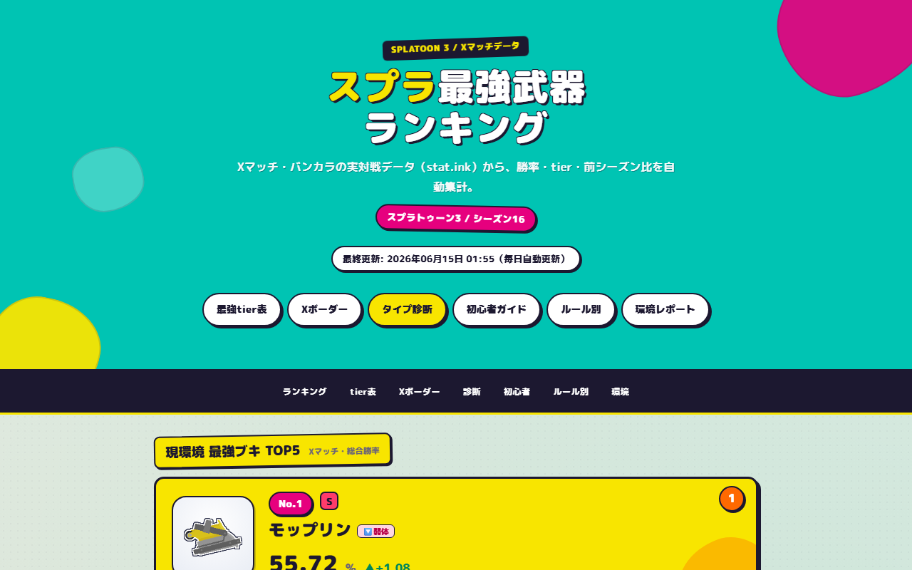
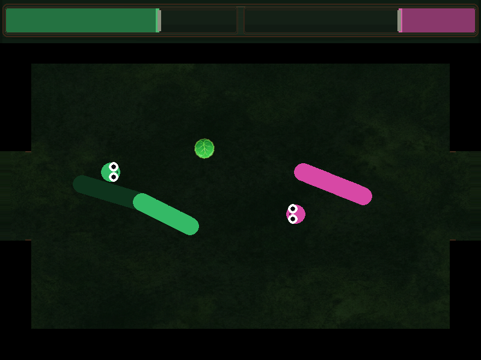

Dev · Data · Live
スプラ最強武器ランキング
stat.ink から勝率データを自動取得し、Python で静的サイトを生成。GitHub Actions による日次更新、武器別ページ、診断・X マッチ境界値など。就活用の「データパイプライン + 公開」作品。
大島橙也 — ゲーム制作から Web ツールまで、プログラムとビジュアルを一人で届けるクリエイター。データ更新サイトや PDF ユーティリティも手がけています。


ゲーム用キャラクターのデザイン・塗り
Unity や Java を使ったゲーム制作を中心に活動しています。プログラムだけでなく、キャラクターの見た目やUIなど「必要なビジュアル」も自分で用意できるのが強みです。
AI（Cursor 等）を開発の相棒にしながら、試作から公開まで素早く回すスタイルで制作しています。完璧な絵師ではありませんが、ゲームに必要なクオリティのビジュアルは自分で仕上げられるところまで伸ばしています。
Unity / Godot / Python / Expo。ゲームロジックから stat.ink 連携の Web サイト、PDF ツールまで。
キャラデザ・UI・ゲーム用アセット。世界観の統一。
UXリサーチ・企画。ユーザー視点での設計。

stat.ink から勝率データを自動取得し、Python で静的サイトを生成。GitHub Actions による日次更新、武器別ページ、診断・X マッチ境界値など。就活用の「データパイプライン + 公開」作品。
カメラロールの写真を A4 PDF にまとめるツール。Web 版（ブラウザ完結）と Expo モバイル版の両方を実装。並べ替え・端末保存・共有に対応。
# 見出し 本文を **Markdown** で書いて PDF に変換
Markdown をブラウザ上で PDF に変換するシンプルな Web ツール。クライアント完結で、原稿執筆から出力までを一画面で完結。
Live Site →
這った跡が体節（壁）になる 2D エアホッケー。CPU・2P 対戦、ダッシュ貫通、森テーマ UI とシネマティック遷移。Python 版を GitHub で公開（PC 向け）。
大量の敵を自動射撃でなぎ倒すサバイバルアクション。Java（Swing）で制作し、ポートフォリオ用に Canvas 版のブラウザデモも公開しています。ブラウザですぐ遊べます。
Web デモをプレイ →
隣接マスを入れ替え、同色4つ以上の連結で消す8×8パズル。連鎖とスコアを組み込み、Cursor と協力しながら C# でロジックを実装。Summer Engine 上でプレイ可能。
GitHub →
6×6 盤にひらがなを置き、横・縦の2〜4文字の語を作って相手の駒を反転。オセロ × もじぴったん風ルールを Godot で実装。2人対戦・CPU対戦に対応。
GitHub →
3×3 の木製ボードで寿命付きひらがなを交互に配置。実在語の3連ラインとマス所有権で即勝利する、1対1の超速ワードボドゲ。モバイル向け UI と CPU AI を検証中。

ゲーム向けキャラクターデザインとセルシェーディング的な陰影表現。タイトルやUIにも活かせるビジュアル制作。イラストの投稿は pixiv でも公開しています。
ギャラリーを見る → pixiv →38名への調査から潜在ニーズを特定。容量・質感などユーザー視点のデータをもとに、機能美を追求したプロダクト企画を策定。